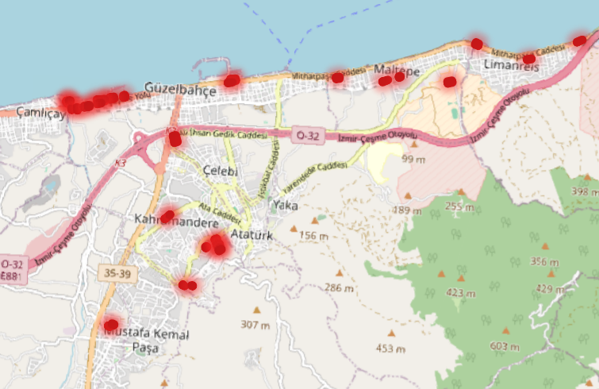

Otoparklar
Park Et ve Devam Et (P+R) ile Öp ve Geç (K+R) uygulamaları ve Güzelbahçe örnekleri
Otopark Alanları

P+R ve K+R Nedir?
Toplu taşıma aktarma noktalarında iki farklı araç kullanım biçimi
Park and Ride (P+R) — Park Et ve Devam Et
Sürücülerin kendi araçlarıyla (otomobil, motosiklet vb.) bir toplu taşıma aktarma merkezine (metro, tren, otobüs terminali) gelip araçlarını buradaki otoparka uzun süreli bırakması ve yolun geri kalanını toplu taşıma ile tamamlaması sistemidir.
- Amaç: Şehir merkezine giren araç sayısını azaltmak, otopark ve trafik kilitlenmesi sorunlarını çözmek.
- Nasıl Çalışır? Çevre yoluna yakın veya şehir çeperlerindeki metro/tren istasyonlarının yanına geniş otoparklar kurulur. Sürücü sabah aracını bırakır, metroya biner, akşam dönüşte aracını alıp eve döner.
Kiss and Ride (K+R) — Öp ve Geç / Bırak ve Git
Sürücülerin bir yolcuyu toplu taşıma istasyonuna sadece araçtan indirmek (veya istasyondan almak) amacıyla yanaştığı, duraklamaya izin veren ancak uzun süreli park etmeye kapalı olan özel cepler/alanlardır.
- Amaç: İstasyon önlerindeki araç sirkülasyonunu düzenlemek, trafiğin tıkanmasını engellemek ve hızlı, güvenli bir yolcu indirme/bindirme alanı sağlamak.
- İsmin Kaynağı: "Sürücünün yolcuyu araçtan indirmeden önce öpüp uğurlaması" (Kiss & Ride) esprili ifadesinden gelir.
| Özellik | Park and Ride (P+R) | Kiss and Ride (K+R) |
|---|---|---|
| Süre | Uzun süreli (gün boyu) | Çok kısa süreli (1-3 dakika) |
| Amaç | Aracı park edip toplu taşımaya geçmek | Yolcuyu indirip/alıp yola devam etmek |
| Sürücü | Sürücü de toplu taşımayı kullanır | Sürücü aracıyla yola devam eder |
| Alan | Katlı veya açık geniş otoparklar | İstasyon girişlerindeki özel indirme cepleri |
Güzelbahçe'de Park and Ride (P+R) Örnekleri
Güzelbahçe Vapur İskelesi çevresi
Güzelbahçe Vapur İskelesi çevresindeki açık otopark ve cepler en tipik yerel P+R örneğidir.
- Nasıl Uygulanır? Yelki, Kahramandere veya Çamlı'dan kendi aracınızla (otomobil veya motosiklet) sahil yoluna inip aracınızı vapur iskelesi yakınındaki otoparka bırakırsınız. Ardından İZDENİZ vapuruyla Konak, Alsancak veya Karşıyaka'ya geçerek şehir içi trafiğine girmeden ulaşım sağlarsınız.
Fahrettin Altay Aktarma çevresi
Fahrettin Altay Aktarma çevresindeki otoparklar, Güzelbahçe'den merkeze gidenlerin sıklıkla kullandığı bölgesel P+R noktasıdır.
- Nasıl Uygulanır? Güzelbahçe'den otoyol veya sahil yolu üzerinden aracınızla Üçkuyular/Fahrettin Altay bölgesine gelip aracınızı aktarma merkezinin katlı otoparkına bırakırsınız. Yolun devamını İzmir Metrosu veya Tramvay ile tamamlarsınız.
Güzelbahçe'de Kiss and Ride (K+R) Örnekleri
Güzelbahçe Meydan, Mithatpaşa Caddesi
Güzelbahçe Meydan Mithatpaşa Caddesi üzerindeki ana ESHOT durak yanaşma cepleri K+R işlevi görür.
- Nasıl Uygulanır? Sabah saatlerinde bir aile ferdini ya da arkadaşınızı aracınızla Mithatpaşa Caddesi üzerindeki ana otobüs durağına getirirsiniz. Aracınızı park etmeden, yolcu indirme cebinde 30 saniye duraklayıp yolcunuzu uğurlarsınız (Kiss & Ride) ve yolunuza devam edersiniz. Yolcunuz da Fahrettin Altay yönüne giden 8/984/321 gibi ESHOT otobüslerine biner.
Özel Okullar ve Kampüs Girişleri
Güzelbahçe genelinde (özellikle Seferihisar Yolu ve Kahramandere bölgesinde) yer alan kolej ve okul önlerindeki "Veli İndirme/Bindirme Cepleri" K+R mantığının en belirgin örneklerindendir. Araçlar park etmez, sadece öğrenciyi indirip alarak sirkülasyonu devam ettirir.
Park and Ride (P+R) Etkileri
Mithatpaşa Caddesi ve Otoyol Yükünü Hafifletir: Kahramandere, Yelki ve Çamlı gibi iç kesimlerde oturan sürücülerin araçlarını Güzelbahçe Vapur İskelesi veya Urla/Çeşme otoyol bağlantı noktalarına yakın alanlarda bırakarak toplu taşımaya (vapur/express ESHOT) geçmesi, sahil aksındaki araç trafiğini doğrudan azaltır.